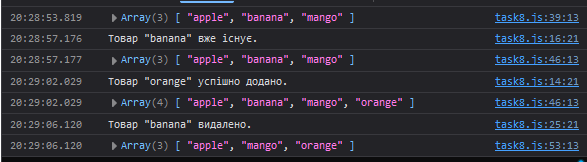

Завдання №4.8
HTML-код (task8.html)
<!DOCTYPE html> <html lang="en"> <head> <meta charset="UTF-8"> <meta name="viewport" content="width=device-width, initial-scale=1.0"> <title>= Task 8 =</title> <link rel="stylesheet" href="../style1.css"> </head> <body> <header></header> <main> <div class="button-container"> <h1>= Завдання №8 =</h1> <input type="button" class="button" onclick="window.location.href='../index.html'" value="На початкову сторінку"> <!-- Викликаємо відповідні JS-сценарії при натисканні кнопок --> <input type="button" class="button" onclick="callFunction1()" value="Виклик = 1 ="> <input type="button" class="button" onclick="callFunction2('banana')" value="Виклик = 2 ="> <input type="button" class="button" onclick="callFunction2('orange')" value="Виклик = 3 ="> <input type="button" class="button" onclick="callFunction3('banana')" value="Виклик = 4 ="> </div> </main> <footer></footer> <script src="../tasks_js/task8.js"></script> </body> </html>
JS-код (task8.js)
// Конструктор Storage для створення об'єкта сховища з початковим набором елементів function Storage(initialItems) { this.items = initialItems; // Метод для отримання всіх елементів зі сховища this.getItems = function () { return this.items; }; // Метод для додавання нового елемента до сховища this.addItem = function (item) { if (!this.items.includes(item)) { this.items.push(item); console.log(`Товар "${item}" успішно додано.`); } else { console.log(`Товар "${item}" вже існує.`); } }; // Метод для видалення елемента зі сховища this.removeItem = function (item) { const itemIndex = this.items.indexOf(item); if (itemIndex !== -1) { this.items.splice(itemIndex, 1); console.log(`Товар "${item}" видалено.`); } else { console.log(`Товар "${item}" не знайдено.`); } }; } // Масив початкових елементів const arr = ["apple", "banana", "mango"] const storage = new Storage(arr); // Функція для виклику методу getItems та виведення списку елементів function callFunction1() { const arrayItems = storage.getItems(); console.log(arrayItems); } // Функція для виклику методу addItems, додавання нового елемента та виведення списку function callFunction2(item) { if (item) { storage.addItem(item); } console.log(storage.getItems()); } // Функція для виклику методу removeItem, видалення елемента та виведення списку function callFunction3(item) { if (item) { storage.removeItem(item); } console.log(storage.getItems()); }
Результат виконання
Коментар до JS-коду
Код створює функцію-конструктор Storage, яка дозволяє створювати об'єкти для управління списком товарів на складі. Коли викликається ця функція, їй передається початковий масив товарів, який зберігається у властивості items. Об'єкт, створений за допомогою конструктора, має методи для взаємодії зі списком товарів. Метод getItems повертає поточний список товарів. Метод addItem додає новий товар до списку, якщо його ще немає, і повідомляє про успішне додавання або про те, що товар уже існує. Метод removeItem видаляє вказаний товар, якщо він присутній у списку, і виводить відповідне повідомлення. Якщо товар не знайдено, користувач також отримує відповідне сповіщення.